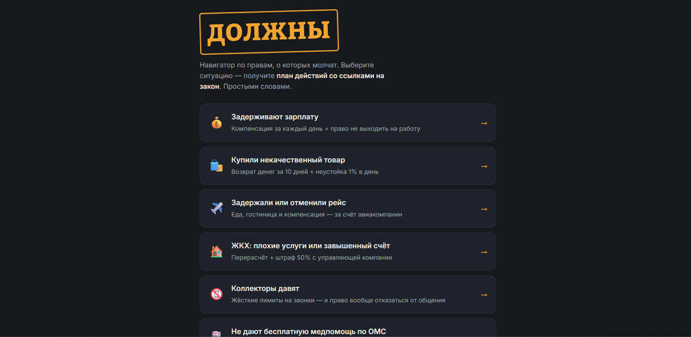

Навигатор по правам «ДОЛЖНЫ»
ЗАПУЩЕНО
Интерактивный сайт · HTML/CSS/JS · GitHub Pages
- Что делает
- Пользователь выбирает свою жизненную ситуацию (7 типовых сценариев) — и получает пошаговый план действий простым языком, со ссылками на конкретные статьи законов.
- Для кого
- Для обычных людей без юридического образования, которые не знают, что им положено, и боятся «бумажной» стороны вопроса.
- Какую задачу решает
- Снимает главный барьер между человеком и его правами — непонятный юридический язык. Вместо «изучите ФЗ-XXX» человек получает план: куда идти, что писать, на что ссылаться.

скриншот главного экрана · живая версия — по кнопке ниже